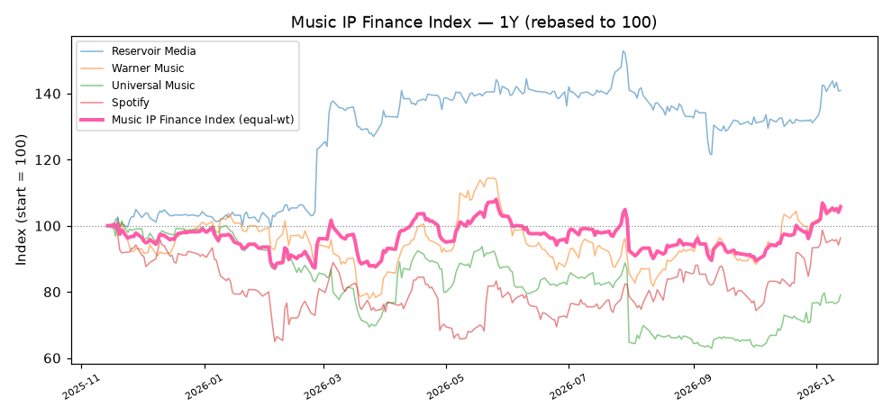

資料日期：2026-11-26 · 產生時間：2026-11-26 09:00 · 每日自動更新 · 🆕 = 近 7 天新資料
執行失敗：<urlopen error timed out>
United States Attorney David M. Toepfer joined Attorney General Todd Blanche and other law enforcement officials in announcing decisive action against foreign and domestic scams. The Justice Department’s historic surge i…
Justice Department’s Anti-Scam Surge follows executive order directing government-wide crackdown on predatory schemes.…
Two men admitted to conspiring to commit bank fraud connected to mail theft from United States Postal Service collection boxes and vehicles across northern New Jersey.…
Baltimore, Maryland – A former Social Security Administration (SSA) employee pled guilty in federal court to charges connected to a Social Security disability theft scheme. Najee Alexander Corbett, 38, of Baltimore, is c…
Providence – On November 18, 2026, a federal grand jury in the District of Rhode Island returned an indictment charging Juan Ricardo Palacio Escobar, 52, a Colombian national, with defrauding individuals and companies wh…
The Securities and Exchange Commission’s Investor Advisory Committee will hold a virtual public meeting on Dec. 3, at 9:30 a.m. ET to discuss the trading of tokenized securities, bankruptcy, and accounting oversight. The…
By Kevin E. Noonan – A little more than a year after dramatically changing the infrastructure of how petitions to the Patent Trial and Appeal Board were assessed and approved (see “Revision to Rules of Practice Before th…
By Kevin E. Noonan – The province of the post-grant review (PGR) provisions of the Leahy-Smith America Invents Act under 35 U.S.C. §§ 321–329 permits a challenger to assert invalidity for anticipation under 35 U.S.C. § 1…
Four patent drawings for Thanksgiving, with a bit of color: a pine-cone turkey gobbler (1928), a cranberry gatherer (1865), a turkey costume (2024) and a pie (2025). Continue reading this post on Patently-O.…
The four November 2026 issues were the largest weekly utility-patent issues in records back to 1976 - a catch-up on the issue-fee backlog, with a likely decrease in the new year. Continue reading this post on Patently-O.…
Patently-O members can now choose the public name shown on their comments, and it doesn't have to be their real name. Continue reading this post on Patently-O.…
前言，本部落格寫了不少關於專利用語明確性的文章，可以參考 #terminology 標籤，對專利工程師而言，美國專利最重要的MPEP之一是「MPEP2173」，過去雖有許多案例關於此2173，因為課程需要在此將過去曾提到的案例作個筆記。MPEP 2173https://www.uspto.gov/web/offices/pac/mpep/s2173.html2173 Claims Must Particularly Point Out…
MPEP 2173.05(c) Numerical Ranges and Amounts Limitations（MPEP 2173：https://www.uspto.gov/web/offices/pac/mpep/s2173.html）I. NARROW AND BROADER RANGES IN THE SAME CLAIMUse of a narrow numerical range that falls within a b…
前情提要：Apple v. Taction的侵權訴訟涉及高達57億美元的損害賠償，在先前專利侵權訴訟中，歷經地方法院判決侵權不成立並上訴到CAFC，CAFC判定地方法院錯誤解釋專利範圍（不當地認為專利範圍有disavowal），並對Taction專家證人的意見濫用裁量權，因此發回重審。（連結：https://cases.justia.com/federal/district-courts/california/casdce/3:2021…
About 130 Federal Circuit opinions call enablement a question of law; most of their citations run back to an unreasoned 1983 footnote in Raytheon v. Roper and, past it, to C.C.P.A. remarks about opinion affidavits that e…
The Federal Circuit affirmed dismissal of a patent suit against Netflix after the plaintiff substituted a new LLC for tactical reasons and then could not substitute itself back. Continue reading this post on Patently-O.…
PMAC Director Aleš Zalar said the center finished its arbitration system and is now operational, as its first Arbitration Day in Lisbon featured FRAND guidelines and a judges’ SEP panel.…
Thanksgiving offers us a chance to step back from the daily grind of court decisions, agency announcements and policy debates to consider what is going right in the world of IP for a change. In 2026, perhaps most notably…
Most conversations about Africa and intellectual property focus on protection: registering a trademark, securing a patent, keeping a competitor from copying a brand. Licensing gets far less attention, even though it is o…
In addition to enforcing gallium nitride (GaN) rights, Navitas appears to have dipped into the secondary patent market to put the squeeze on Renesas.…
The CoA confirmed the UPC’s competence over FRAND rate-setting counterclaims directed jointly against patent proprietors and patent pool administrators. Admissibility was not addressed.…
Philips wins an eight-country UPC injunction against Anker’s wireless chargers ahead of Black Friday, while the court leaves the legal basis for standalone SEP declarations unresolved.…
There are scenarios in which a nullity action in the Federal Patent Court can serve a strategic purpose when defending against a UPC infringement action.…
This week on IPWatchdog Unleashed, I spoke with Jon Putnam, Lindsey Miller, and Jane Love. Our conversation took place during our annual Life Sciences Program and examined a fundamental challenge in patent enforcement: t…
David Kappos, Judge Randall Rader, Professor Eric Priest, and I submitted an amicus brief to the Beijing Intellectual Property Court in a patent term extension (PTE) case involving Takeda. The submission addresses confli…
My new article “Process Tracing China’s Pharmaceutical IP Reforms: Foreign Pressure, Domestic Innovation, and Institutional Change” is now available on SSRN at https://papers.ssrn.com/sol3/papers.cfm?abstract_id=7472640.…
Chen Fuli’s appointment as Party Secretary of CNIPA brings an experienced trade lawyer, diplomat and legislator into the agency’s top leadership as Shen Changyu prepares to move to WIPO. Chen previously served as China’s…
Join us on September 10 for a free, virtual Asia Society Northern California program, “Critical Minerals, Technology, and the Future of U.S.-China Competition,” featuring Walter Copan, Gloria Xiong, and Cory Combs. We wi…
On the 100th anniversary of my father Ronald Cohen’s birth, I look back at two public-health innovations he helped develop: a blocked-flue safety control designed to prevent carbon monoxide poisoning in New York City ten…
National Radio and Television Administration General Office Guang Dian Ban Fa (2021) 267 All provincial, autonomous region and municipal radio and television bureaus, the Xinjiang Production-Construction Corps Culture, S…
All provincial, autonomous region and municipal Party Committee cybersecurity and informatization offices, the Xinjiang Production-Construction Corps Party Committee Cybersecurity and Informatization Office” Since the “C…
YBJBF No. (2021)24 All banking supervisory bureaus, all large-scale banks, shareholding-type banks and foreign invested banks: In order to promote commercial banks to effectively implement the “Provisional Rules for the…

| 標的 | 價格 | 近1年 |
|---|---|---|
| Reservoir Media RSVR | 10.13 | +35.8% |
| Warner Music WMG | 32.46 | +15.9% |
| Universal Music UMG.AS | 16.93 | -23.0% |
| Spotify SPOT | 616.46 | +4.0% |
| 音樂 IP 金融指數 INDEX | — | +8.2% |
On October 19, 2026, the U.S. Department of War issued a press release titled, “Department of War Announces Research Mitigation Results from Academic Institutions.” The Press Release states: The Department of War announc…
Blockchain is often framed as a governance mechanism for creative industries, offering new ways to record provenance, manage rights and distribute value. Yet its governance implications extend beyond technical functional…
This paper examines the transformative impact of blockchain technology and non-fungible tokens on the visual arts sector. We explore how NFT innovations are reshaping digital art creation, distribution, and monetization…
Ownership of non-fungible tokens (NFTs) associated with cinematograph films is advertised, whereas Indian copyright law makes any transfer of a right in a film by way of assignment or licence possible only if it complies…
Protecting and utilizing intellectual property (IP) are strategic aspects of the creative economy, yet the sector faces challenges in transparency, data security, and governance efficiency. Blockchain technology—characte…
Indonesia’s move toward data-based music royalty distribution represents a significant shift in copyright and related rights governance. Yet, this shift exposes a serious metadata gap. Royalty allocation now depends on u…
Generative AI is shifting digital rights management from access control to managing an ongoing rights relationship across training, inference, and output. Addressing linked challenges in provenance, identification, attri…
The rapid development of Generative Artificial Intelligence (GenAI) has gradually intensified the debate around the lawful use of copyrighted works during the training phase of AI models. GenAI works by processing a larg…
The intellectual property sector is undergoing through significant changes due to the rapid growth in the technology.This paper traces the history of the intellectual property with national and international frameworks f…
今日無新項目
How does reducing the cost of governance participation shape activity in decentralized platforms? We examine this question in decentralized autonomous organizations (DAOs), whose decentralized governance intends to encou…
Decentralized social media platforms promise to redistribute control over content curation from centralized algorithms to ordinary users, but whether this redistribution is genuinely democratizing user influence and broa…
This study explores the application of consortium blockchain technology as a transformative mechanism for enhancing transparency, accountability, and democratic governance within textile cooperatives in Tamil Nadu, India…
In 2021, the blockchain-based project CityDAO raised over $8 million from non-fungible token (NFT) sales with the stated intent to build a collectively-governed city. This piece analyses CityDAO's rise and fall to show h…
Tornado Cash Governance: An Object-Centric Event Log of Decentralized Governance on Ethereum Overview This dataset provides a real-world Object-Centric Event Log (OCEL 2.0) representing the governance process of Tornado…
The article interprets blockchain immutability as an ethical-anthropological limit case. Drawing on H. Arendt and P. Ricœur, it shows that the distributed ledger hypertrophies the promise (irreversible smart contract) an…
The global deployment of autonomous AI agents within and across organisations exceeds the governance infrastructure available to constrain it. Agent communication and authentication protocols, principally the Model Conte…
今日無新項目